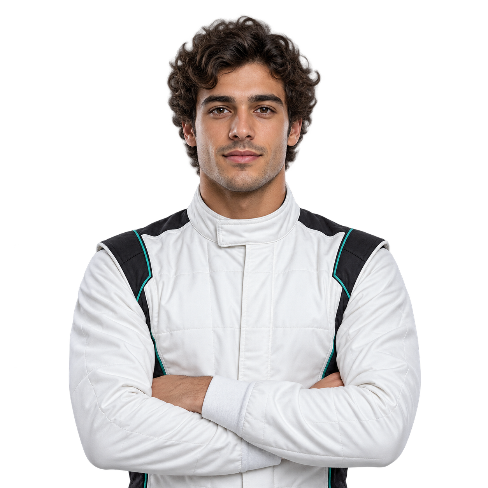

DRIVER_042
LEOMAZZI
- 🇮🇹 ITALY
- ✣ ROOKIE SEASON_2026
- ◎ GRID01 RACING TEAM

A driver. A different perspective.
01 / THE SEASON
2026Every lap.
A little closer.
A fictional driver’s story, built for the next generation of racing portfolios.
- STARTS
- 12
- PODIUMS
- 03
- FOCUS
- 100%
02 / NEXT RACE
THE GRAND TOURFind the
racing line.
A circuit built for this template.
Follow one complete lap.
Scroll into view to start the lap.
03 / THE GARAGE
BUILT TO CUSTOMIZEThe details
make the difference.
Swap the portrait, change the colors and make the season your own. The helmet reveal, cursor trails, circuit lap and stacked sections are all local browser code.
Reference: Kimi / GetLayers
Original motion described by its
creator.
Independently reconstructed here.